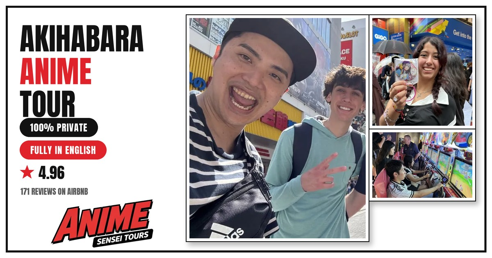
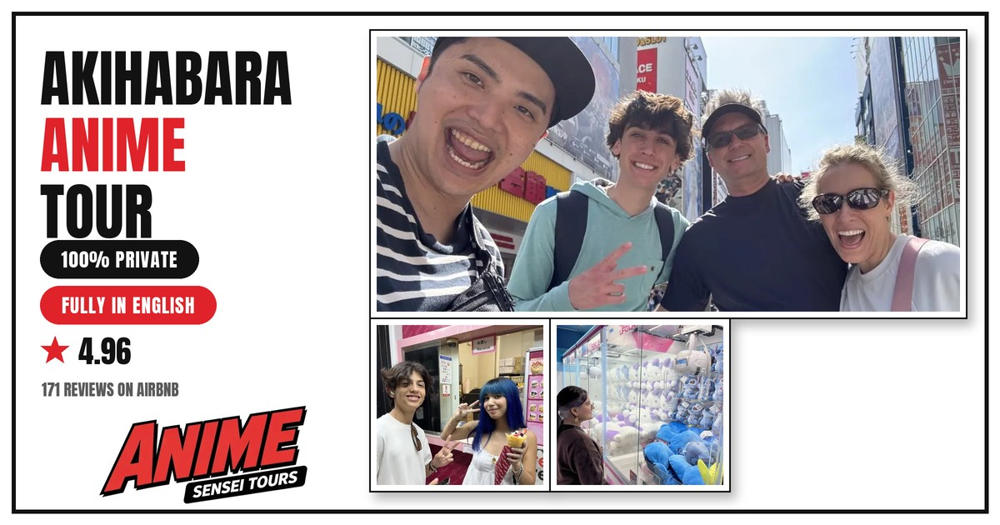
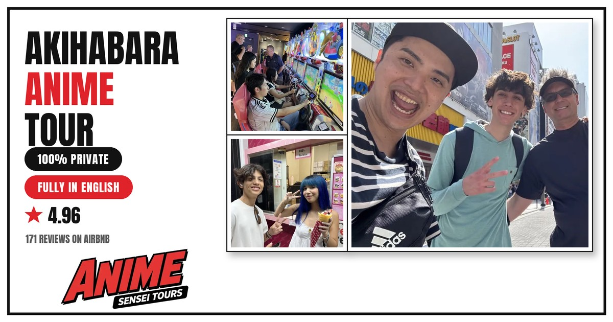
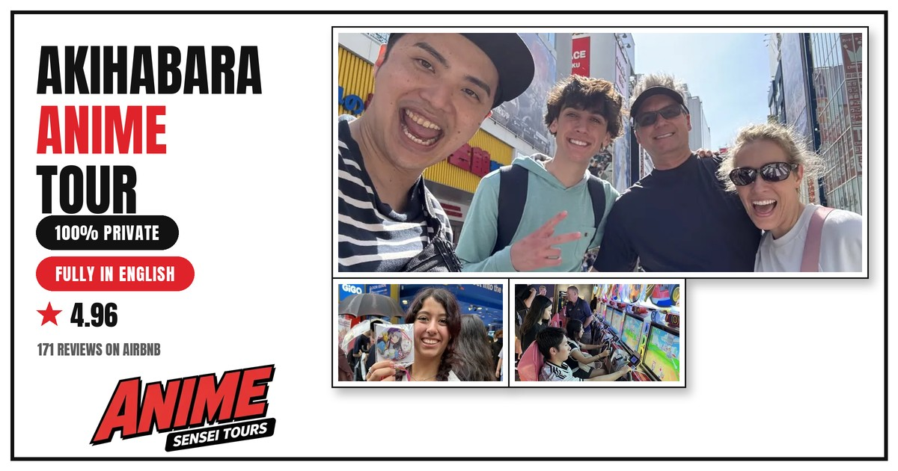
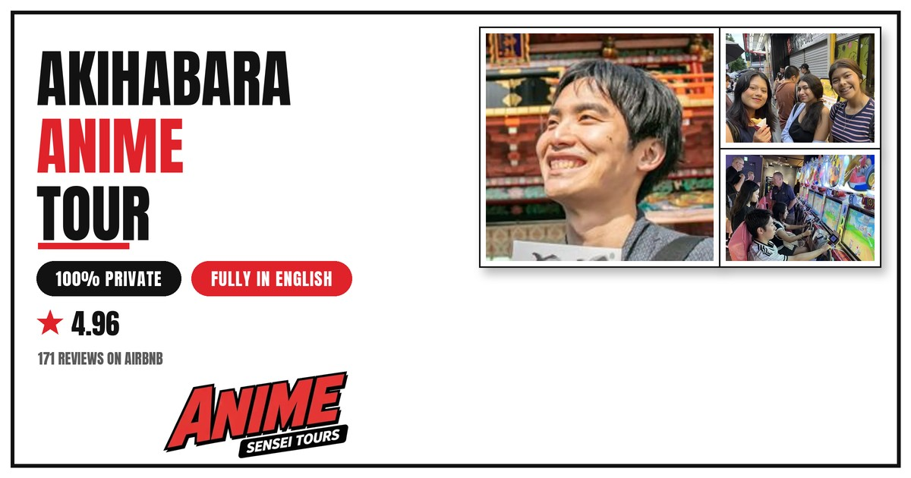

秋葉原アニメツアーLP
OGP画像 最新5案
対象ページ：Akihabara Anime Tour（animesenseijp.com/akihabara-tour/）の OGP 画像、最新の5案（案21〜案25）です。選ばれた案20（グリッド誌面型）を磨いた第5弾で、縦書きの日本語を外し、タイトルを大きく左上に寄せ、各案にガイド本人の写真を1枚入れています。ロゴは左カラムの評価（★4.96／171 REVIEWS）の真下の空白に大きく配置し直しました。右側は写真だけにしています。全案にゲーセンで楽しんでいる写真を入れ、写っている人物の顔が見切れていないか全案を点検済みです。全案 1200×630・実写真使用。本番の og:image はまだ差し替えていません。
番号で選んでください。選ばれた案を本番に設定します。
案21グリッド正統磨き型
案20の骨格そのままの磨き版。縦書きを外してタイトルを大きく左上に寄せ、ロゴは左カラムの評価の真下に大きく。大写真はガイド本人の集合自撮り、小写真は缶バッジとゲーセンのレースゲーム。

案22ワイド主役型
本人の集合自撮りを横長で大きく見せ、下に小写真2枚（クレープ・クレーンゲーム）を並べたワイド構成。賑わいが横に広がるタイプ。ロゴは左カラムの評価の真下に大きく。

案23センター大写真型
小写真2枚（アーケード・クレープ）を左に縦積みし、本人の集合自撮りを右に大きく置いた構成。ロゴは左カラムの評価の真下に大きく。

案24L字グリッド型
横長の大写真（本人の集合自撮り）の下に小写真2枚（缶バッジ・ゲーセンのレースゲーム）を横並びにしたL字グリッド。写真の帯がL字に流れるタイプ。ロゴは左カラムの評価の真下に大きく。

案25ミニマル余白型
特大タイトルと余白で魅せるミニマル版。写真は右上に小さくまとめ、大写真はガイド本人のポートレート。ピルは横並び、赤ラインのアクセントつき。ロゴは左カラムの評価の真下に大きく。
